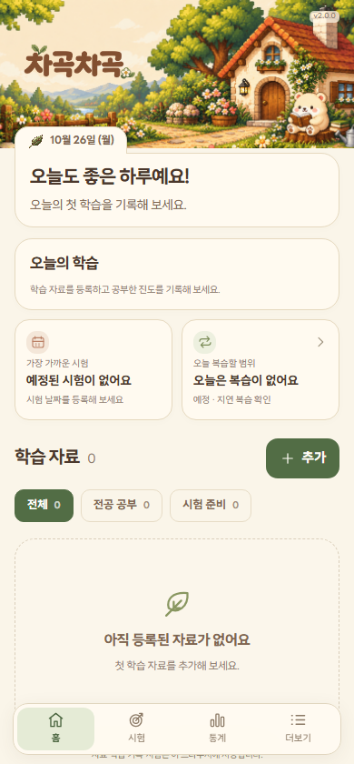
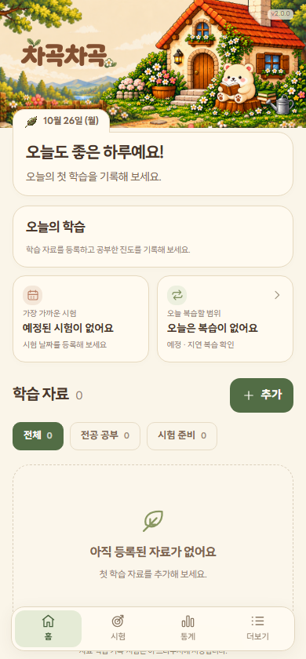

<!doctype html><html lang="ko"><meta charset="utf-8"><meta name="viewport" content="width=device-width"><title>배너 원본·배포본 비교</title><style>body{margin:28px;background:#faf5e9;color:#4b382c;font:15px/1.7 system-ui}main{max-width:1400px;margin:auto}.grid{display:grid;grid-template-columns:1fr 1fr;gap:24px}img{width:100%;height:auto;display:block;border:1px solid #e3d8c2;border-radius:16px}.mobile img{max-width:390px}h2{font-size:18px}@media(max-width:700px){.grid{grid-template-columns:1fr}}</style><main><h1>작업 원본과 배포본 비교</h1><p>현재 차이를 그대로 캡처했습니다. 선택 전까지 배너는 수정하지 않습니다. PC 화면은 전체를 같은 비율로 축소해 표시합니다.</p><div class="grid"><section><h2>작업 원본 · PC</h2><div class="mobile"><h2>작업 원본 · 모바일</h2></div></section><section><h2>배포본 · PC</h2><div class="mobile"><h2>배포본 · 모바일</h2></div></section></div></main></html>